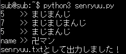
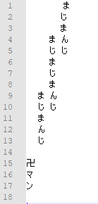
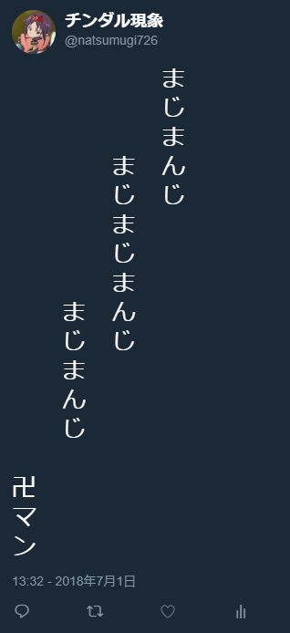
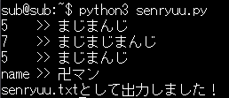
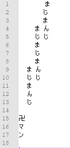
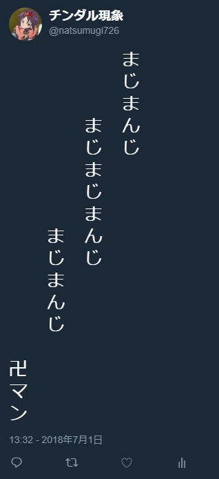
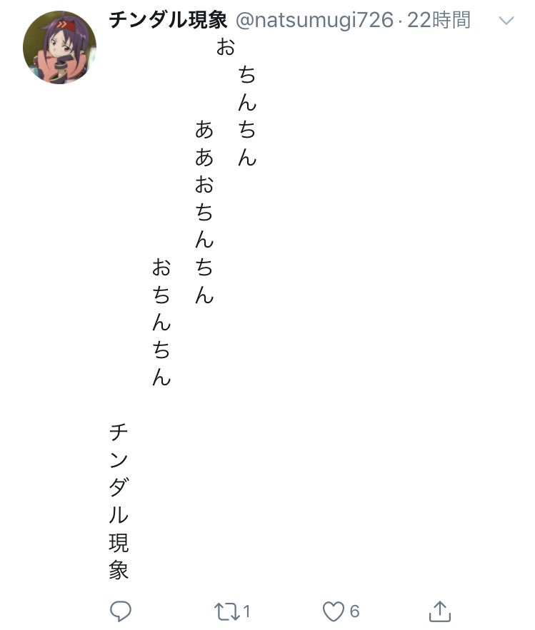
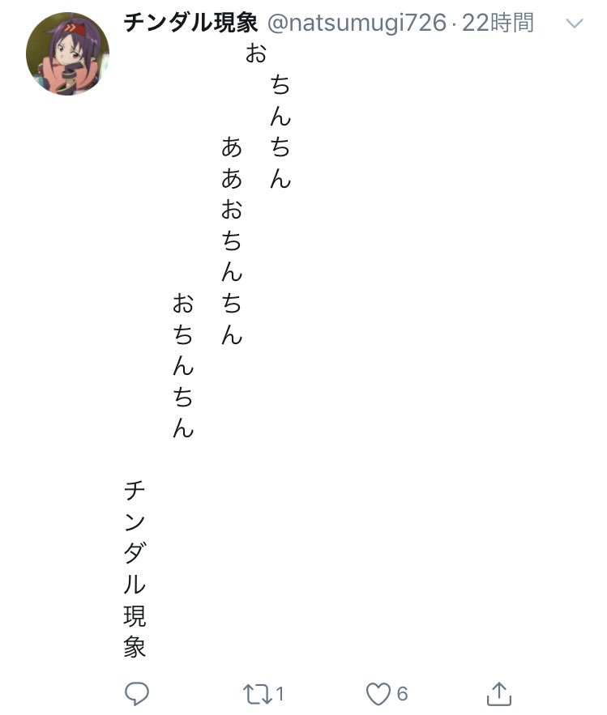

Twitterで川柳のレイアウトを整えるのが面倒だったので
Pythonでレイアウトを整えてくれるプログラムを書きました。
Twitter用川柳プログラム
実物
コンソール

出力

ツイート


出力

ツイート

改善点
Twitterでは一文字目から空白ではない文字までの間が
全て無かったことにされるので、
このプログラムでは一文字目に空白文字を入れています。
当初は全ての空白を空白文字で置いていたのですが、
iOSだと空白文字が表示されないということだったので
一文字目だけを空白文字で置きました。
ですがiOSで空白文字が表示されないということに変わりはないので
このように一行目だけ一列ずれて表示されてしまいます。

流石にこれを直すほどのやる気はなかったので諦めました。
全て無かったことにされるので、
このプログラムでは一文字目に空白文字を入れています。
当初は全ての空白を空白文字で置いていたのですが、
iOSだと空白文字が表示されないということだったので
一文字目だけを空白文字で置きました。
ですがiOSで空白文字が表示されないということに変わりはないので
このように一行目だけ一列ずれて表示されてしまいます。

流石にこれを直すほどのやる気はなかったので諦めました。
プログラム
最後にこのプログラムのソースコードを貼っておきます。
なにか質問があればツイッターでもどこでも良いので気軽に聞いてください。
なにか質問があればツイッターでもどこでも良いので気軽に聞いてください。
senryuu.py
# coding: utf-8
def main():
f = open("senryuu.txt", "w")
first = input("5 >> ")
second = input("7 >> ")
third = input("5 >> ")
name = input("name >> ")
f.write("ㅤ")
for i in range(14 + len(name)):
if i >= 14:
f.write(name[i-14])
elif i == 0:
pass
else:
f.write(" ")
if i < 8 + len(third):
f.write(" ")
if i >= 8:
f.write(third[i-8])
else:
f.write(" ")
if i < 3 + len(second):
f.write(" ")
if i >= 3:
f.write(second[i-3])
else:
f.write(" ")
if i < len(first):
f.write(" ")
f.write(first[i])
f.write("\n")
f.close()
print("senryuu.txtとして出力しました！")
if __name__ == '__main__':
main()